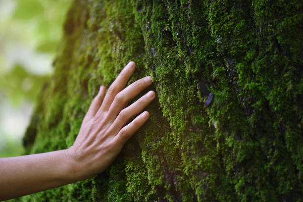

El término ökologie fue acuñado en 1869 por el naturalista y filósofo alemán Ernst Haeckel a partir de las palabras griegas oikos (casa, vivienda, hogar) y logos (estudio o tratado); por ello ecología significa «el estudio del hogar». En un principio, Haeckel entendía por ecología la ciencia que estudia las relaciones de los seres vivos con su ambiente, pero más tarde amplió esta definición al estudio de las características del medio, que también incluye el transporte de materia y energía, y su transformación por las comunidades biológicas.
Nuestra misión es promover prácticas sostenibles que ayuden a conservar el medio ambiente y mejorar la calidad de vida en nuestras comunidades.
Nos esforzamos por ser líderes en la conservación del medio ambiente, creando un futuro más verde y sostenible para las próximas generaciones.
Creemos en la integridad, la responsabilidad y la innovación como pilares fundamentales para alcanzar nuestros objetivos ecológicos.
Esta bolsa reutilizable está confeccionada con algodón 100% orgánico, cultivado sin el uso de pesticidas ni fertilizantes químicos. Su diseño resistente y espacioso es ideal para realizar compras diarias, transportar libros o llevar cualquier otro artículo personal.
Este termo de acero inoxidable es la solución perfecta para mantener tus bebidas calientes o frías durante horas. Fabricado con materiales de alta calidad y libre de BPA, es resistente a golpes y caídas, ideal para el uso diario, tanto en la oficina como en actividades al aire libre.
El cepillo de dientes de bambú es una alternativa ecológica a los cepillos de plástico convencionales. Con cerdas suaves hechas de nylon sin BPA, este cepillo ofrece una limpieza efectiva mientras cuida tus encías y el medio ambiente.